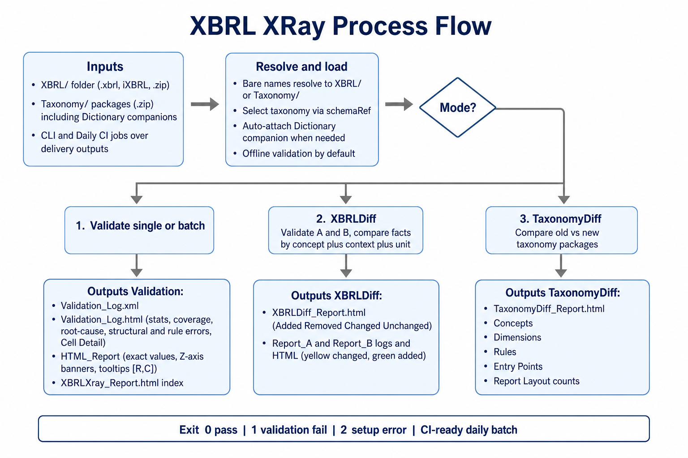

Process flow

| Stage | What happens |
|---|---|
| Inputs |
Filings from XBRL/ (.xbrl, iXBRL, or .zip) and taxonomy packages from Taxonomy/.
CLI or daily CI jobs scan delivery outputs. Modes: validate, --xbrl-diff, --taxonomy-diff.
|
| Resolve & load |
Bare filenames resolve under XBRL/ or Taxonomy/.
Taxonomy is selected from the instance schemaRef; EBA-style filings also auto-load the matching Dictionary companion.
Validation runs offline by default (--online to allow downloads).
|
| Validate | Structural and formula/DQ checks run. Stats, cell coverage, and fact→cell mapping are collected. |
| Outputs (validate) | Validation_Log.xml, Validation_Log.html, HTML_Report/, XBRLXray_Report.html. |
| Outputs (XBRLDiff) | XBRLDiff_Report.html plus Report_A/ and Report_B/ logs and HTML (yellow = changed, green = added). |
| Outputs (TaxonomyDiff) | TaxonomyDiff_Report.html — Concepts, Dimensions, Rules, Entry Points, Report Layout. |
0 pass ·
1 validation fail ·
2 setup / runtime error
Capabilities
| Capability | Detail |
|---|---|
| Automatic taxonomy | Selects matching package from Taxonomy/ via schemaRef. For EBA-style filings, also loads the Dictionary companion (reporting frameworks alone leave report cells empty). |
| Structural + rule validation | Separates taxonomy/dimension/schema issues from formula / DQ assertion failures. |
| Validation Log | Stats, coverage, root-cause tree, troubleshooting, and Cell Detail (row|col). |
| HTML table report | Taxonomy tables with exact instance lexical values. |
| Cell tooltips | Hover/focus any data cell for metric, dimensions, and coordinates like [0760, 0010]. |
| Z-axis banners | Clear banners for multi-value Z slices (e.g. currency). |
| XBRLDiff | Compare two filings: Added / Removed / Changed / Unchanged; highlight Report B cells. |
| TaxonomyDiff | Compare two taxonomy packages: Concepts, Dimensions, Rules, Entry Points, Report Layout. |
| Zip instances | Accepts compressed filings and extracts the XBRL/iXBRL member automatically. |
| Bare filenames | --xbrl, --xbrl-diff, and --taxonomy-diff resolve bare names from XBRL/ or Taxonomy/. |
| CI-ready | Batch mode and exit codes support daily CI jobs over every delivery output. |
Requirements & installation
Requirements
- Python 3.10+ (tested with 3.13)
- Taxonomy package zip(s) in
Taxonomy/ - XBRL/iXBRL filings in
XBRL/(or explicit paths)
Folder layout
XBRLXray/
XBRL/
Taxonomy/
Output/
validate_xbrl.py
XBRLXray_Process_Flow.png
ReadMe.html
ReadMe.mdInstallation
From the XBRLXray folder on the on-prem host:
py -3 -m venv .venv
.\.venv\Scripts\Activate.ps1
py -3 -m pip install -r requirements.txtCompressed (zip) instances
Place the zip in XBRL/ or pass it with --instance / --xbrl. XBRL XRay extracts the member automatically (prefers .xbrl, then .xhtml/.html, then .xml).
py -3 validate_xbrl.py -i XBRL\big-filing.zip --no-html-reportHow to run
Batch mode (all files in XBRL/)
py -3 validate_xbrl.pySingle file
Bare names resolve from XBRL/:
py -3 validate_xbrl.py --xbrl "PRA101 Capital Plus.xbrl"
py -3 validate_xbrl.py -i ad.xbrlXBRLDiff (two filings)
py -3 validate_xbrl.py --xbrl-diff CC_PreFix.xbrl CC_PostFix.xbrl
py -3 validate_xbrl.py --xbrl-diff "ad.xbrl" "ad - Copy.xbrl"TaxonomyDiff (old vs new taxonomy)
1st = old/existing, 2nd = new/upcoming. Bare names resolve from Taxonomy/:
py -3 validate_xbrl.py --taxonomy-diff boe-statistics-taxonomy-v130.zip boe-statistics-taxonomy-v131.zipCommand-line options
| Option | Description |
|---|---|
--xbrl | File (single run) or folder of files. Bare names → XBRL/. |
--instance / -i | Same as --xbrl <file>. |
--taxonomy-diff OLD NEW | Compare two taxonomy .zip packages. Bare names → Taxonomy/. |
--xbrl-diff FILE_A FILE_B | Compare two filings (Report A vs Report B). |
--xbrl-dir | Batch input folder (default: ./XBRL). |
--taxonomy-dir | Taxonomy zip folder (default: ./Taxonomy). |
--output-dir | Output root (default: ./Output). |
--online | Allow internet downloads (default: offline). |
--no-html-report | Skip HTML table report (validation logs still written). |
Outputs
Single / batch validation
Output/
<fileStem>/
XBRLXray_Report.html ← open this first
Validation_Log.html
Validation_Log.xml
HTML_Report/
index.html
...
_extracted/ ← only when input was a .zipOpen Output/<fileStem>/XBRLXray_Report.html first — it links into HTML_Report/ and the Validation Log.
XBRLDiff
Output/
XBRLDiff_<A>_vs_<B>/
XBRLDiff_Report.html
Report_A/
Report_B/TaxonomyDiff
Output/
TaxonomyDiff_<old>_vs_<new>/
TaxonomyDiff_Report.htmlValidation Log (Validation_Log.html)
Human-readable ERROR-level findings. Validation_Log.xml is the machine-readable companion used to drive the HTML.
Section order
Validation Log
├── Taxonomy applied (includes Instance path + companion packages)
├── Validation rule stats
├── Cell coverage
├── Error Root-Cause Analysis
├── Structural Error(s)
└── Validation rule failures1. Taxonomy applied
| Field | Meaning |
|---|---|
| Instance | Path of the filing validated. |
| Taxonomy applied / name / version | Package identity used for validation. |
| Package file / path | Zip on disk under Taxonomy/. |
| Companion packages | Extra packages auto-loaded (e.g. EBA Dictionary). |
| Matched entry point | Entry point resolved from the instance. |
| Instance schemaRef | Schema reference found in the filing. |
2. Validation rule stats
| Field | Meaning |
|---|---|
| Validation rules (total) | Assertions present in the applied taxonomy/formula set. |
| Rules checked | Assertions that fired at least once for this filing. |
| Rules passed / failed | Checked rules with no failures / with one or more failures. |
| Evaluations passed / failed | Individual assertion evaluation counts. |
| Errors / Warnings | Message counts for this file. |
3. Cell coverage
| Field | Meaning |
|---|---|
| Cell coverage % | populated ÷ report cells. |
| Report cells | Cells defined by taxonomy tables. |
| Populated | Cells with a reported fact (these are what validation can check). |
| Empty | No fact for that metric/dimension combination — not validated for that cell. |
| Instance facts | Total facts in the XBRL instance. |
4. Error Root-Cause Analysis
├── 42 errors -> Missing dimension
├── 25 errors -> Invalid taxonomy concept
├── 18 errors -> Incorrect value
├── 10 errors -> Missing mandatory fact
└── 5 errors -> Calculation mismatch| Bucket | Typical meaning |
|---|---|
| Missing dimension | Dimension / hypercube / axis mismatch. |
| Invalid taxonomy concept | Concept/element not in DTS or unknown element. |
| Incorrect value | Formula / value assertion failed. |
| Missing mandatory fact | Existence / mandatory reporting assertion failed. |
| Calculation mismatch | Calculation linkbase / summation inconsistency. |
| Other | Did not match the buckets above. |
5–6. Structural errors & rule failures
Structural issues are taxonomy/dimension/schema problems — fix these before relying on formula results for the same cells. Rule failures are formula / DQ assertions. Both include Root cause, detail, and Affected fact(s).
Affected fact columns
| Column | Meaning |
|---|---|
| Label / QName / Value | Concept label, qualified name, reported value. |
| Context | contextRef id. |
| Cell Detail | Report coordinates, e.g. 0760|0010. |
| Line | Source line in the instance when available. |
| Dimensions | (Structural) Axis / member pairs on the fact. |
HTML Report
| Feature | Meaning |
|---|---|
XBRLXray_Report.html | Convenience index next to validation logs. |
HTML_Report/index.html | Table menu for all rendered report tables. |
| Exact values | Shows XBRL lexical values (not rounded display). |
| Cell tooltips | Metric, dimensions, and [R, C] coordinates. |
| Z-axis banners | Marks which Z slice you are viewing. |
| Scroll container | Wide/tall tables scroll inside the viewport. |
In XBRLDiff mode on Report B: yellow = changed, green = added.
TaxonomyDiff
Produced by --taxonomy-diff OLD_TAXONOMY NEW_TAXONOMY.
| Section | Counts |
|---|---|
| Concepts | Added / Removed / Changed |
| Dimensions | Added / Removed |
| Validation Rules | Added / Removed / Changed |
| Entry Points | Added / Removed / Changed |
| Report Layout | Yes/No overall, plus Added / Removed / Modified tables |
XBRLDiff
Produced by --xbrl-diff FILE_A FILE_B.
Fact identity: concept + context (entity / period / dimensions) + unit.
| Metric | Meaning |
|---|---|
| Added Facts | Present in B only. |
| Removed Facts | Present in A only. |
| Changed Facts | Same identity in A and B, different value. |
| Unchanged | Same identity and same value in both. |
Typical workflow
- Put taxonomy zips in
Taxonomy/and filings inXBRL/. - Run
py -3 validate_xbrl.py --xbrl YourFiling.xbrl. - Open
Output/<stem>/XBRLXray_Report.htmlto browse tables and tooltips. - Open
Validation_Log.html— start with Root-Cause Analysis, then structural errors, then rule failures; use Cell Detail to locate[row, col]. - To check a fix:
--xbrl-diff Before.xbrl After.xbrl. - For taxonomy upgrades:
--taxonomy-diff old.zip new.zip.
Daily CI usage
Point --xbrl-dir (or drop files into XBRL/) at each delivery output folder,
run batch validation on a schedule, publish Output/ reports as build artifacts,
and gate the pipeline on exit code 0/1/2.
py -3 validate_xbrl.py --xbrl-dir \\share\deliveries\today --output-dir \\share\xbrlxray\today